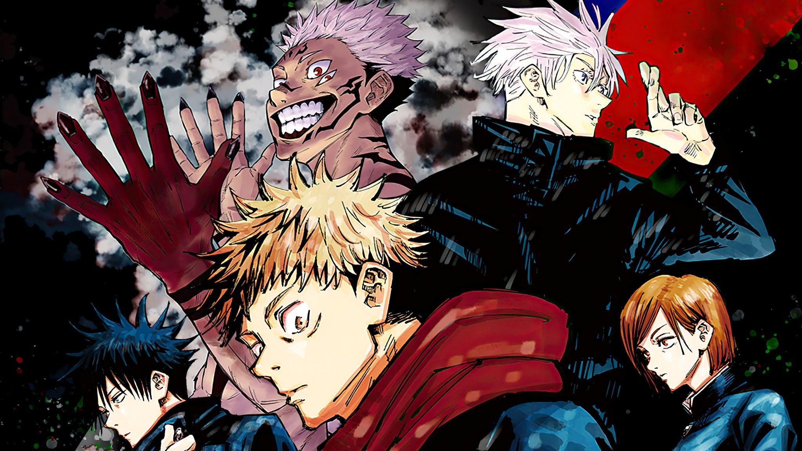
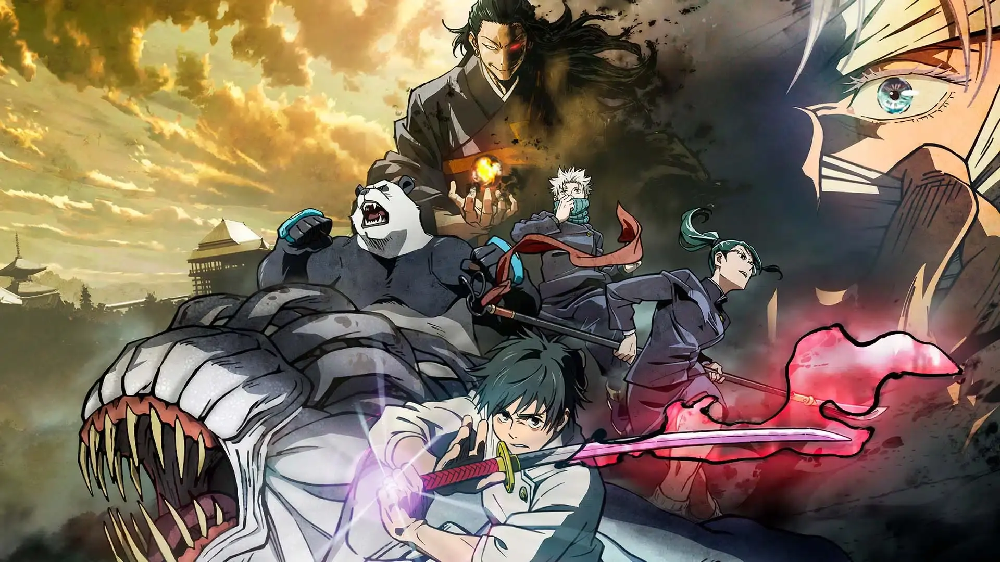
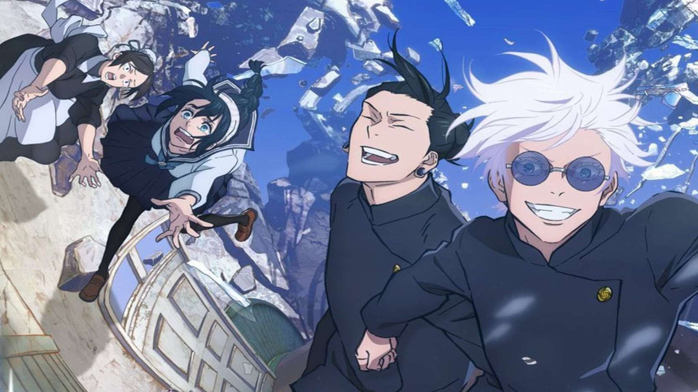

 Season 1 Después de que Yuji Itadori ingiere el Cuerpo de Sukuna, un espíritu maligno, se convierte en el anfitrión del espíritu y se ve obligado a unirse a una organización secreta de Jujutsu Sorcerers (Sorcerers de la Magia) para eliminar a Sukuna y otros espíritus malignos que amenazan la sociedad.  Jujutsu Kaisen 0 Pelicula centrada en la historia de Yuta Okkotsu, un estudiante que se convierte en un hechicero después de que su amiga de la infancia, Rika Orimoto, muere y se convierte en un espíritu maligno.  Season 2 En estos capítulos veremos los sucesos que desencadenaron la terrible noche del incidente de Shibuya (31 de octubre de 2018), a través de los ojos del hechicero más poderoso: Satoru Gojo, cuando aún era un estudiante de segundo año de la Escuela Técnica de Brujería de Tokio.